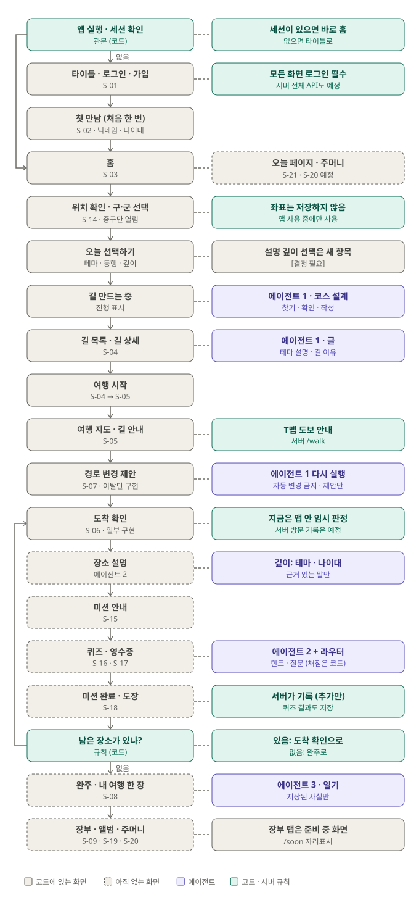
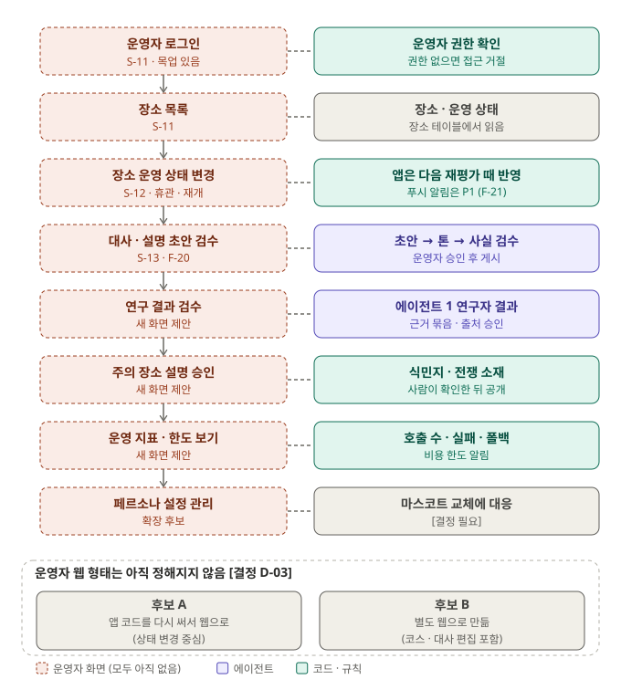
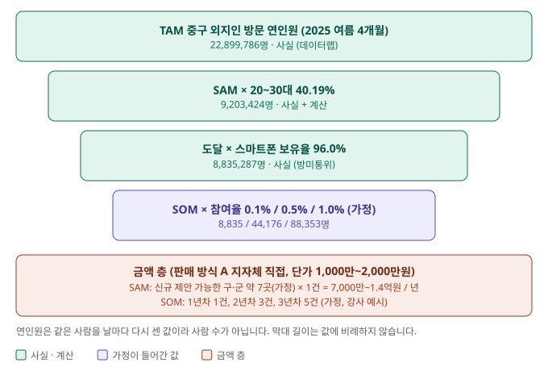
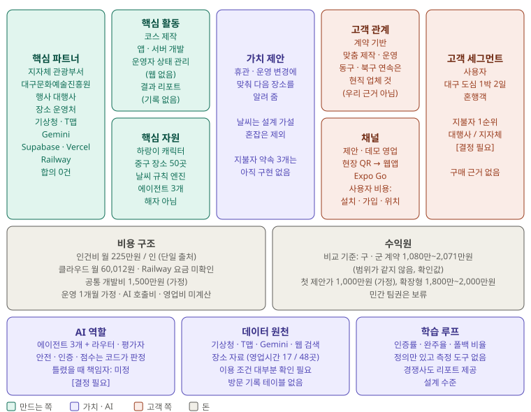
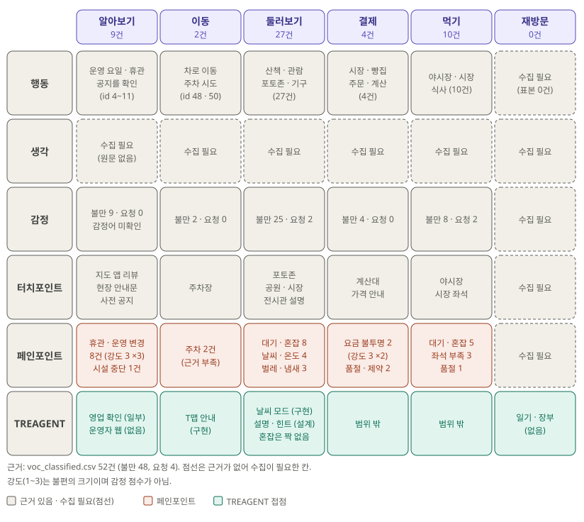
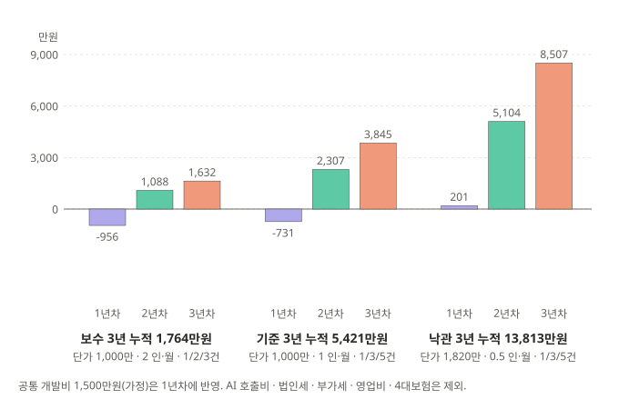
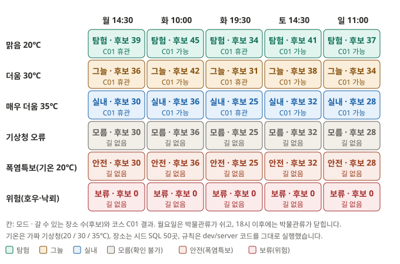

TREAGENT 기획서 v1 요약
2026-11-24 · 팀 확인 전 초안 · 본문: treagent_planning_doc_v1.md
1. 한눈에 보기
대구 중구에서 날씨·시간·장소 운영 상태에 맞춰 길(코스)을 바꿔 안내하고, 하랑이가 안내와 기록을 맡는 서비스
방문 전 정보가 현장과 달라 헛걸음하거나, 더위·혼잡에 막힘. 행사 운영 쪽은 변경 안내와 결과 보고가 부담
규칙 엔진이 날씨로 모드를 정하고, 에이전트 3개(코스 설계·장소 안내·기록 정리)가 찾고 쓰고 기록. 안전·판정은 규칙이 담당
지자체 관광부서·관광기관과 행사 대행사의 코스 제작·운영 계약. 민간 팀권은 보류
2. VOC와 페인포인트
지도 리뷰 43건과 블로그 9건에서 불만·요청 52건을 분류했습니다. 전체 관광객의 불편률로 바꿔 말할 수 없는 분류표입니다.
| 페인포인트 후보 | VOC 건수 | 핵심 |
|---|---|---|
| 대기·혼잡 | 13건 (강도 합 21) | 줄이 길거나 자리가 없음. 축제 글이 섞여 과대일 수 있음 |
| 휴관·공사·운영 변경 | 10건 (강도 합 20) | 운영 정보가 현장과 달라 헛걸음 (알아보기 단계 8건, 강도 3은 3건) |
| 날씨·온도 | 4건 (강도 합 5) | 더위·바람·냉기로 오래 머물기 어려움 |
첫 파일럿은 “운영 변경 → 대체 장소 선택 → 진행 복구”에 집중합니다.
3. 페르소나
귀가 일정 사이 여유 시간에 중구에서 짧게 둘러봄. 휴대폰으로 운영시간과 길을 확인. 20~30대는 모집 가설 가설
여러 장소 담당자와 일정을 맞추고 당일 변경에 대응, 종료 후 발주처에 보고 인터뷰 전
4. 유저 플로우


5. 시장 규모 (TAM · SAM · SOM)

6. 비즈니스 모델 캔버스

레드팀 검증 결과
투자자·고객·경쟁사 관점 서브에이전트 3개를 동시에 실행. 지적 21건(치명 5 · 중요 13 · 참고 3)을 11개 묶음으로 정리하고, 두 관점 이상이 같은 지적이면 한 단계 상향. 기록: redteam_log_v1.md
| 묶음 | 분류 | 지적 | 제안 처리 (팀 확인 전) |
|---|---|---|---|
| R1 지불자 근거 | 치명 | 돈을 내는 쪽의 구매 이유에 근거가 없음. 동구·북구 연속 계약은 현직 업체 것. 1순위가 문서마다 다름(대행사 / 지자체) | 재계약 선례 정정, 1순위 결정 필요, 구매 신호 인터뷰 |
| R2 가격 근거 | 치명 | "같은 일의 대안 비용"은 팀 금지 문장. 계약 4건은 범위가 다름. 퀘스투어 두 상품 혼재 | "범위가 다른 비교 기준"으로 수정, 확인값·가정값 분리 |
| R3 책임 소재 | 치명 | AI가 틀린 설명을 냈을 때 책임질 역할이 없음 | 후보 A(주의 장소만 사전 승인) / B(전부 사전 승인), 팀 결정 |
| R4 약속 미구현 | 치명 | 지불자 약속 3개(변경 입력·반영·집계) 모두 없음. 차별점 근거 없음 | 약속/현황 분리, 경쟁사 시연 확인 과제 |
| R5 데이터·해자 | 치명(상향) | 영업시간 아는 곳 17/48. 이용 권리 미확인. 핵심 자원 복제 쉬움 | "모름" 표기, 해자는 가설로 낮춤 |
| R6 비용 | 중요(상향) | Railway·AI 호출비 누락, 운영 개월 1 가정, 인건비 근거 약함 | Railway 줄 추가, 가정 표기, 숫자는 한도 확인 후 |
| R7 시장·건수 | 중요 | 구·군 7곳과 계약 건수가 가정 | 시장 규모 한 줄과 가정 표기 |
| R8 VOC 대표성 | 중요(상향) | 날씨 VOC 4건이 중구 밖. 강도 3은 서문야시장 편중 | 가치 제안을 "운영 정보"로 좁힘, 날씨는 설계 가설 |
| R9 사용자 비용 | 중요(상향) | 설치·가입·위치·개인정보 수고를 적은 칸이 없음 | 채널 블록에 사용자 비용 표기, D-17 결정 |
| R10 학습 루프 | 중요 | 설계 수준, 경쟁사도 리포트 제공 | 차별점이 아님을 표기 |
| R11 큰 플랫폼 | 참고 | 지도 앱이 기능을 붙이면 대체될 위험 | 근거 자료 없어 보류, 포지셔닝 맵 때 재검토 |
팀이 정할 것: 1순위 지불자 · AI 오류 책임 소재(후보 A/B) · 구매 신호 인터뷰 · 경쟁사 시연 확인 · 개인정보 범위(D-17). 이 표의 처리는 제안이며 책임자 칸은 비워 두었습니다.
반영본: bm_canvas_v2.md · vpc_v2.md
6-1. 고객 여정 지도

7. 손익 시나리오

8. 시뮬레이션 3개
사업 시뮬레이션
판매 방식(A 지자체 직접 / B 행사 대행사 경유), 단가, 건당 투입, 계약 건수를 바꿔 손익분기와 3년 누적을 계산했습니다. 기존 손익 문서의 숫자를 모두 재현해 계산식을 확인했습니다. 전문: jung_summer_simulation_v1.md
① 기존 시나리오 3개 (손익 문서 그대로, 원)
| 보수 | 기준 | 낙관 | |
|---|---|---|---|
| 단가 · 건당 투입 | 1,000만 · 2 인·월 | 1,000만 · 1 인·월 | 1,820만 · 0.5 인·월 |
| 계약 수 (1/2/3년차) | 1 / 2 / 3 | 1 / 3 / 5 | 1 / 3 / 5 |
| 1년차 손익 | -9,560,012 | -7,310,012 | +2,014,988 |
| 3년 누적 | +17,639,928 | +54,209,892 | +138,134,892 |
② 손익분기 계약 수 (건당 1 인·월 기준, 소수 건수 → 올림)
| 판매 방식 | 단가 1,000만원 | 단가 1,820만원 |
|---|---|---|
| A 지자체 직접 | 1.95건 → 2건 | 0.94건 → 1건 |
| B 대행사 경유 (마진 10%) | 2.24건 → 3건 | 1.07건 → 2건 |
| B 대행사 경유 (마진 15%) | 2.42건 → 3건 | 1.14건 → 2건 |
③ 무엇이 결과를 가장 크게 흔드나 (기준 시나리오, ±20%)
| 가정 | 3년 누적 변화 폭 |
|---|---|
| 계약 단가 | 36,000,000원 |
| 계약 수 | 27,683,957원 |
| 건당 투입 · 인건비 단가 | 각 8,100,000원 |
| 공통 개발비 | 6,000,000원 |
- 단가 1,000만원에서는 연 2건부터 1년차가 흑자입니다. 계약이 0건인 해의 손실은 공통 개발비(가정)입니다.
- B는 대행사 마진 15%(가정)만으로 손익분기가 소수 기준 0.2~4.2건 늘어납니다. 건당 3 인·월이면 9건이 필요합니다.
- 가장 크게 흔드는 두 가정(단가, 계약 수)이 모두 가정값입니다. 레드팀도 같은 곳을 지적했습니다: 가격 근거는 범위가 다른 비교 기준이고, 계약 수에는 구매 신호가 없습니다 (R2·R7).
- 비용에는 AI 호출비, Railway, 영업비, 세금이 빠져 있고 운영 개월은 1로 가정했습니다 (R6).
서비스 시뮬레이션

- 모드 판정은 의도대로 동작합니다 (20℃ 탐험, 30℃ 그늘, 35℃ 실내).
- 월요일 폭염에는 실내 코스의 3곳이 모두 월요일 휴관이라 갈 곳이 없고, 저녁에도 3곳이 닫힙니다.
- 영업시간을 아는 방문 장소는 48곳 중 17곳(35%)뿐이라 나머지는 열린 것으로 보고 추천합니다.
페르소나 이용 시뮬레이션
| 페인포인트 | 판정 |
|---|---|
| 휴관·공사·운영 변경 | 일부 (영업시간을 아는 장소만 걸러짐) |
| 대기·혼잡 | 미해소 (혼잡 데이터 없음) |
| 날씨·온도 | 일부, 새 위험 (폭염에 야외 유형 장소가 코스에 들어감) |
실제 사용자 관찰이 아닌 논리적 점검입니다.
9. 결정이 필요한 것
- 판매 방식 1순위와 대행사 마진, 1차 고객과 민간 타깃의 우선순위
- 에이전트가 경로 결정까지 맡는 것(기획서 15장 원칙과 달라짐)과 제출(11/30)까지의 구현 범위
- 레드팀 결과: AI 오류 책임 소재(후보 A/B), 구매 신호 인터뷰, 가치 제안 범위를 "운영 정보"로 좁힐지
- 운영자 웹의 형태, 폭염 모드에서 야외 유형 장소를 코스에 넣을지
전체 목록은 본문 14·15장, 근거 문서는 본문 0장 표에 있습니다.